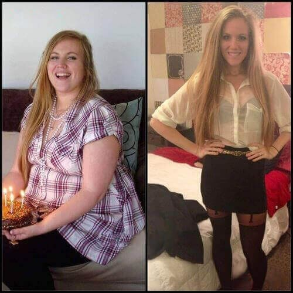
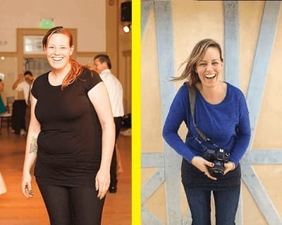
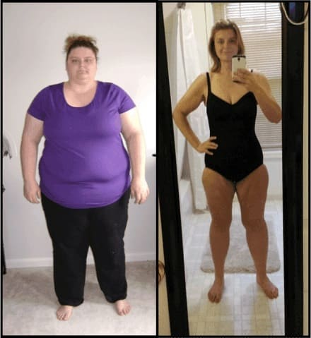

Hallo zusammen! Jeder hat bemerkt, dass ich viel abgenommen habe und natürlich wurde ich mit vielen Fragen bombardiert . Ich wollte wirklich allen persönlich antworten, doch das war wegen der Vielzahl der Anfragen einfach unmöglich. Also habe ich mich entschlossen, in diesem Artikel jene Frage zu beantworten: "Wie hast du es geschafft, 31 kg abzunehmen?" (Das heißt natürlich nicht, dass ihr mir trotzdem schreiben und Fragen stellen dürft. So ist es nur einacher).
Meine Verwandlung hat nur ZWEI MONATE gedauert! UNGLAUBLICHE ERGEBNISSE ODER?

Ich war nie wirklich schlang, doch irgendwann bemerkte ich, dass ich immer dicker wurde. Am Bauch hatte ich drei schlimme Speckrollen und ich sah im Bikini aus wie ein Mops! Meine Hüften, meine Beine und mein Po wurden immer dicker! Ich habe mich entschlossen, alles zu probieren, um wieder fit zu werden . Also habe ich auf fettige und frittierte Lebensmittel verzichtet. Sogar meine spätabendlichen Snacks waren Schnee von gestern. Außerdem ging ich morgens und abends ins Fitnessstudio! Aber nach einem Monat war ich geschockt - ich wog FAST 100 kg! Ich entschied mich für immere strengere Diäten und verzichtete nun auch noch auf Brot und Fleisch. Am Ende aß ich nur noch Obst und Gemüse und trank nur noch Wasser. Ich probierte sogar unfassbar teure Pillen und Tees, aber nichts half ! Nach einiger Zeit kam das Gewicht einfach immer wieder zurück.
Weder Diäten noch Pillen halfen. Es war nur Abzocke!
Sport ist zu anstrengend und man sieht erst nach Ewigkeiten erste Ergebnisse. Was sollte ich tun?
Nach unzähligen Diäten, Pillen, Stunden im Fitnessstudio und unheimlich teuren Personal Trainers wollte ich schon aufgeben. Doch dann stieß ich auf einen Artikel über Matcha Slim und wollte es ausprobieren. Auch wenn ich sah, dass Demi Moore, Katy Perry, Jennifer Lopez und viele weitere Stars damit abnahmen, war ich noch skeptisch. Aber ich hatte bereits alles ausprobiert. Ich hatte keine Wahl! Außerdem waren die Kommentare äußerst positiv!
Millionen von Frauen in Europa und den USA haben mit Matcha Slim schon abgenommen. Studien zufolge nahmen 96,7% aller Anwender in drei Wochen 12-17 kg ab!

Ich war überzeugt! Ich ging auf die Webseite , sah mir alles ganz genau an und habe mir das Pulver bestellt. Es wurde noch in derselben Woche geliefert. Ich laß mir die Anweisungen durch und löste täglich einen Teelöffel in 150 ml Wasser auf und trank das Mittel.
Ergebnisse
Nach nur zwei Wochen war ich überrascht. Ich hatte 6 kg abgenommen! Die Schwellungen waren weg und meine Haut sah viel besser aus! Mein Bauch und meine Hüften waren wieder schlanker und natürlich war ich auch besser gelaunt! Ich glaubte wieder an mich und dass ich ohne Diäten und Sport fit werden konnte. Also machte ich weiter und aß alles, was ich wollte . Ich hatte die Diäten und das Training so satt...
Am Ende der dritten Woche hatte ich weitere 12 kg verloren! Ich wurde richtig fit und entschloss mich sogar, statt den Fahrstuhl wieder die Treppen zu nehmen. Was einst eine Qual war, ist seitdem eine Freude. Ich kann es ja selbst kaum glauben. Ich habe nur den Anweisungen der Verpackung gefolgt. Das kann jeder! Nach nur zwei Monaten hatte ich 31 kg abgenommen!
Ich habe mein Ziel in 60 Tagen erreicht. Mein Bauch war weg, ich hatte 31 kg abgenommen und habe eine Figur, die ich mir nie hätte vorstellen können !
Übrigens wurde Matcha Slim im Jahr 2014 von der Nationalakademie der Wissenschaften geprüft. Die Ergebnisse wurden jedoch nie groß publiziert, weil sie einen Schock ausgelöst hätten. Klar, die Pharmaunternehmen, die Fitnessstudios, die Ernährungsberater und die Privatkliniken wollen ihre Kunden nicht verlieren. Kein Wunder: Matcha Slim ist unfassbar günstig!

Jetzt empehle ich Matcha Slim all meinen Freunden und Kollegen. Wichtig: Bestellt es nur auf der offiziellen Webseite um Fakes zu vermeiden. Ich bin mit meinen Ergebnissen zufrieden und möchte, dass ihr es auch seid! Vergesst die Klischees! Ihr braucht keine Diäten oder Trainings, um schlank zu werden!
PS: Falls ihr auch schon Matcha Slim ausprobiert habt, würde ich mich über eure Kommentare sehr freuen! Vielleicht können wir jemanden überzeugen, es auch zu probieren. Viele Grüße!
Hey zusammen! Ich habe gute Neuigkeiten! Der Hersteller von Matcha Slim hat mich kontaktiert und den ersten 100 Besuchern meines Blogs 50% Rabatt angeboten, die eine Bestellung aufgeben!
Kommentare
Hallo Julia, vielen Dank! Du hast mich überzeugt, endlich etwas gegen mein Übergewicht zu tun! Das ist nun drei Wochen her und habe 28 kg abgenommen. Ich wiege nur noch 57 kg und das Gewicht bleibt stabil. Viele Grüße, Katharina
Ich habe schon ewig von einer schlanken Figur geträumt. Dann habe ich von Matcha Slim gehört und habe es vor drei Monaten ausprobiert. Erst habe ich noch gezögert, aber meine Mutter hat mich überredet. Der Preis war auch echt günstig! Abnehmen ist so einfach und wir machen es gemeinsam. Aber meine Mutter nimmt mehr ab als ich. :(
Ich bin so froh, diesen Blog gefunden zu haben. Ich werde dieses Pulver auf jeden Fall ausprobieren!
Hallo! Ich habe mich an deine Empfehlung gehalten und Matcha Slim ausprobiert. Du hast meine Familie und meine Ehe gerettet. Vielen Dank! Mein Mann ist jetzt viel aufmerksamer als zuvor und ich habe auch wieder mehr Selbstvertrauen. Ich fühle mich GENIAL! :)
Hey Ladies! Ich bin auch bald wieder dünn!! Ich habe meine Matcha Slim Packung gerade erst erhalten! Vielen Dank für all eure Kommentare, die mich richtig motivieren. Ich hoffe, dass ich auch bald so aussehe wie ihr. Ich melde mich dann nochmal!
Hallo Nicole! Ich freue mich für dich! Das Wichtigste ist doch, dass du dich wieder wohlfühlst in deinem Körper. Hoffentlich sehen wir bald Fortschritte bei dir. Und bedenke: Jeder kleine Fortschritt ist besser als gar keiner! Viel Glück!
Hallo Julia! Ich bin so froh, deinen Blog gefunden zu haben. Ich habe schon so viele Methoden ausprobiert, doch die Ergebnisse waren immer enttäuschend. Ich bin nur 1,60m groß und wiege 97 kg. Das muss sich dringend ändern!! Ich will mindestens 36 kg abnehmen und Matcha Slim scheint die Lösung zu sein...
Hallo Carolin! Ich bin nicht die einzige, die mit diesem Pulver abnehmen konnte! Meine Freundinnen haben es auch probiert und ES FUNKTIONIERT garantiert zu 100%! Du wirst nicht enttäuscht sein, glaub mir!
Leute, ich muss nochmal eine Bitte loswerden. Wenn ihr ein paar Minuten habt, würde ich mich wirklich freuen, wenn ihr eure Ergebnisse hier teilen könntet! Vielleicht überzeugen wir noch ein paar Skeptiker, damit wirklich jeder schnell und einfach abnehmen kann!
Ich habe die Packung gestern bekommen und wage meinen Start ins neue Leben! Ich freue mich schon auf die ersten Ergebnisse!
Hallo Julia! Vielen Dank! ich habe wirklich schnell abgenommen und vor allem ist das Gewicht stabil. Was für ein Wunder! Ich kann dieses Pulver nur allen empfehlen, die abnehmen wollen, ohne zu hungern.
Ich habe morgen ein Daten und wir werden in einem Restaurant essen gehen. Vor ein paar Wochen schien das unmöglich, doch jetzt bin ich schlank und die Männer stehen auf mich. Außerdem kann ich alles essen, was ich möchte und nehme nicht zu! Ich habe mithilfe von Matcha Slim 27,5 kg abgenommen. In nur einem Monat!
Wow! Das hast du in nur einem Monat geschafft?! Vielleicht sollte ich Matcha Slim auch mal ausprobieren, um ein paar Kilos loszuwerden...
Ich bin in 6 Wochen 18 kg losgeworden! Unglaublich! VIelen Dank Julia!!
Glückwunsch! Deine Ergebnisse sind unglaublich! Ich habe keinen Zweifel, dass Matcha Slim hilft!!!
Hier wie versprochen meine Ergebnisse. Das Mittel funktioniert einwandfrei. Ich habe in nur 6 Wochen 15 kg abgenommen. WOW!
Ihr braucht nicht zweifeln, es funktioniert wirklich. Mein Freund und ich haben mit Matcha Slim in 2 Monaten je gut 18 kg abgenommen. Beeindruckend oder?
Vielen Dank für all eure Kommentare. Ihr habt mich echt motiviert und ich werde mir Matcha Slim gleich kaufen! Ich hoffe, dass ich mindestens 5-6 kg abnehmen kann, um mein Idealgewicht zu erreichen!
Meine drei Cousinen haben mit diesem Pulver seit einigen Monaten stark abgenommen. Sie sind nicht mehr dick, sondern wirklich wunderschön!
Also hier sind meine Ergebnisse: Ich habe ohne Sport ganze 12,5 kg abgenommen! Wirklich jeder ist begeistert! :)
Hallo Gertrud! Das freut mich für dich! Soweit ich weiß, wolltest du aber noch mehr abnehmen oder? Aber ein guter Anfang und weiterhin viel Glück!
Hallo Julia! Ich habe deinen Artikel gelesen und werde mir Matcha Slim bestellen. Bald steht das Klassentreffen an und ich möchte nicht die Dicke sein, die mit 115 kg auftaucht! Ich will wieder so aussehen wie damals mit 17 und nur noch 68 kg wiegen. Natürlich ist das ein weiter Weg, aber du hast mir die nötige Motivation gegeben! Vielen Dank!
Deine Resultate sind der Wahnsinn. Aber man muss dafür wirklich keine Diät machen? Ich hasse es, wenn ich auf bestimmte Sachen verzichten muss...ich will doch nicht hungern!
Christine, genau. Matcha Slim erfordert nicht, dass man eine bestimmte Ernährung einhält. Wir alle wissen doch sowieso, dass das Gewicht nach der Diät zurückkommt. Das passiert bei Matcha Slim nicht. Also keine Sorge, probiere es einfach aus!
Ich kann es kaum glauben! Ich habe nach 2 Monaten 20 kg abgenommen!!! Dieses Pulver ist ein richtiger Schatz ! Mein Mann und ich haben jetzt unsere zweiten Flitterwochen! ;)
Ich habe dieses Pulver nun auch seit 2 Monaten probiert und bereits 23 kg abgenommen! Ich kann es kaum glauben, aber früher wog ich tatsächlich 90 kg! Jetzt kann ich mich am Strand wieder sehen lassen...
Ich muss dringend 14 kg abnehmen...ich bin dann auf diese Webseite gestoßen und war fasziniert von all den Kommentaren. Ich werde dieses Pulver definitiv ausprobieren. Mal sehen, was passiert. Wünscht mir Glück!
Meine Schwester hat eine Packung Matcha Slim letztes Jahr aus Japan bestellt. Ich habe sie ja erst ausgelacht. Wie sollte man bitteschön ohne Diät und Sport schon abnehmen können. Doch sie hat mich überredet und ich habe es probiert. Im Februar habe ich das Pulver zum ersten Mal getrunken und im Mai MUSSTE ICH MIR NEUE KLAMOTTEN KAUFEN! Mir war einfach alles zu groß!!! Statt 92 kg wog ich nach 2 Monaten nur noch 58 kg!!! Das ist jetzt schon eine Weile her, aber das Gewicht blieb stabil! Ich bin überglücklich! Probiert dieses Pulver einfach mal ein paar Wochen aus. Ihr werdet schon sehen...
Wow, Dagma, das klingt beeindruckend! Mädels, ich möchte mich nochmal dafür entschuldigen, dass ich nicht jedem antworten kann. Ich bin aber wirklich froh, dass ihr alle mit euren Ergebnissen zufrieden seid!
Noch vor Kurzem wog ich 79 kg. Mittlerweile sind es nur noch 54 kg und ich kann alles essen, ohne zuzunehmen! Ich bin wirklich stolz auf mich. Hier mal ein paar Fotos:
Hallo Julia und alle, die hier kommentiert haben! Ich bin unendlich dankbar! Ich bin 53 Jahre alt und habe lange mit meinem Übergewicht gekämpft. Selbst einfacher Sport war zu viel für mich und ich hatte fürchterliche Rückenschmerzen und war schnell außer Puste. Ich habe mir die Meinungen durchgelesen und wollte Matcha Slim unbedingt probieren. Die Ergebnisse sprechen für sich und übertrafen meine Erwartungen! Ich wiege nur noch 63 kg (statt 91 kg)! Und das in gerade einmal 3 Monaten! Ich fühle mich großartig und sehe deutlich 10 Jahre jünger aus. Meine Rückenschmerzen sind nun auch verschwunden!
Ich habe früher japanischer Tee getrunken, um abzunehmen. Klar habe ich 2 kg abgenommen, aber die Kilos waren nach 2 Wochen wieder drauf. Bitte sagt mir, dass das bei Matcha Slim nicht so ist!
Hallo Petra! Keine Sorge, das wird nicht passieren. Schau dir nur die Fotos all der Frauen an, die mit Matcha Slim abnehmen konnten und nie wieder zunahmen. Das Taurin sorgt dafür, dass dein Körper die Kontrolle über die Fette erhält. Du solltest Matcha Slim einfach mal ausprobieren für eine Woche und du wirst sofort die Wirkung spüren!